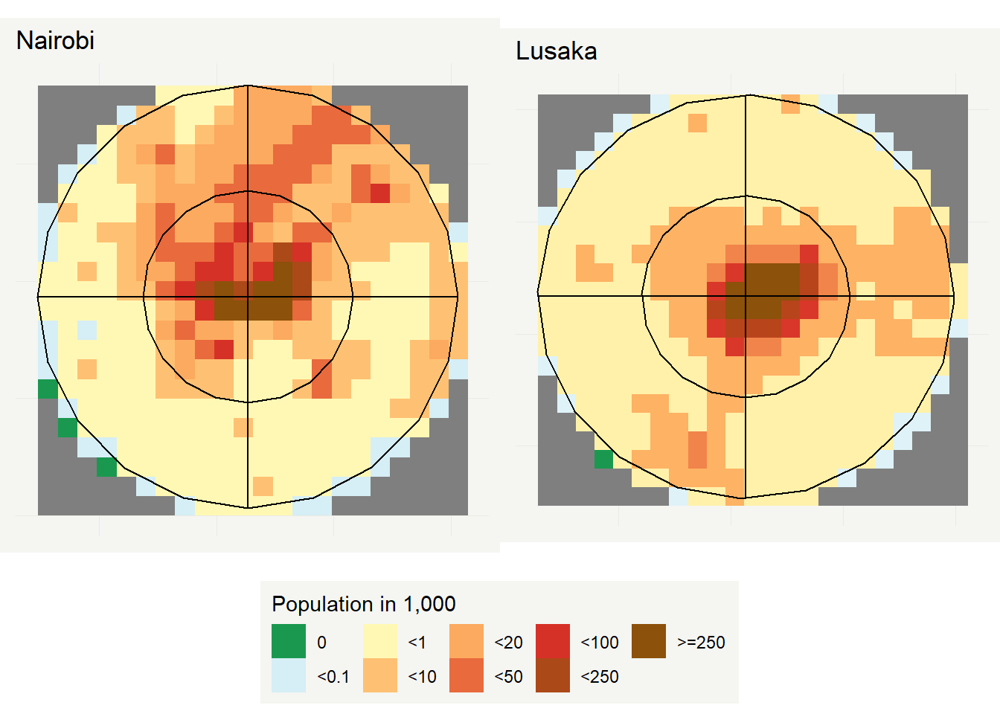

To extract the population data, the sampling areas need to unified first. In the next step, the data gets extracted via the prepare_raster_of_sampling_area. Here, we make use of the fasterize package which is much faster in turning SpatialPolygons into raster files than the original rasterize function of the raster package. Finally, we aggregate the extracted data to a 1 and a 5 kilometer grid. The 5 km grid is shown in the following graphs.
# unify
# dar_unified <- gUnaryUnion(dar_bins_6)
lusaka_unified <- gUnaryUnion(lusaka_bins)
nairobi_unified <- gUnaryUnion(nairobi_bins)
# kenya_unified <- gUnaryUnion(kenya_sampling_bins)
# northern_tanzania_unified <- gUnaryUnion(northern_tanzania_sampling_bins)
# southern_tanzania_unified <- gUnaryUnion(southern_tanzania_sampling_bins)
malawi_unified <- gUnaryUnion(maw_sampling_bin)
zambia_unified <- gUnaryUnion(zambia_sampling_bin)
# extract
# dar_population <-
# prepare_raster_of_sampling_area(tanzania_population,dar_unified)
lusaka_population <-
prepare_raster_of_sampling_area(zambia_population,lusaka_unified)
nairobi_population <-
prepare_raster_of_sampling_area(kenya_population,nairobi_unified)
# kenya_population <-
# prepare_raster_of_sampling_area(kenya_population,kenya_unified)
#
# northern_tanzania_population <-
# prepare_raster_of_sampling_area(tanzania_population,
# northern_tanzania_unified)
#
# southern_tanzania_population <-
# prepare_raster_of_sampling_area(tanzania_population,
# southern_tanzania_unified)
malawi_population <-
prepare_raster_of_sampling_area(malawi_population,malawi_unified)
zambia_population <-
prepare_raster_of_sampling_area(zambia_population,zambia_unified)
# aggregate
# dar_population_1k <- aggregate(dar_population,fact=10,fun=sum,na.rm=TRUE) # 1 km
# dar_population_5k <- aggregate(dar_population,fact=50,fun=sum,na.rm=TRUE) # 5 km
lusaka_population_1k <- aggregate(luska_population,fact=10,fun=sum,na.rm=TRUE) # 1 km
lusaka_population_5k <- aggregate(luska_population,fact=50,fun=sum,na.rm=TRUE) # 5 km
nairobi_population_1k <- aggregate(nairobi_population,fact=10,fun=sum,na.rm=TRUE) # 1 km
nairobi_population_5k <- aggregate(nairobi_population,fact=50,fun=sum,na.rm=TRUE) # 5 km
# kenya_population_1k <- aggregate(kenya_population,fact=10,fun=sum,na.rm=TRUE) # 1 km
# kenya_population_5k <- aggregate(kenya_population,fact=50,fun=sum,na.rm=TRUE) # 5 km
#
# northern_tanzania_population_1k <-
# aggregate(northern_tanzania_population,fact=10,fun=sum,na.rm=TRUE) # 1 km
# northern_tanzania_population_5k <-
# aggregate(northern_tanzania_population,fact=50,fun=sum,na.rm=TRUE) # 5 km
#
# southern_tanzania_population_1k <-
# aggregate(southern_tanzania_population,fact=10,fun=sum,na.rm=TRUE) # 1 km
# southern_tanzania_population_5k <-
# aggregate(southern_tanzania_population,fact=50,fun=sum,na.rm=TRUE) # 5 km
malawi_population_1k <- aggregate(malawi_population,fact=10,fun=sum,na.rm=TRUE) # 1 km
malawi_population_5k <- aggregate(malawi_population,fact=50,fun=sum,na.rm=TRUE) # 5 km
zambia_population_1k <- aggregate(zambia_population,fact=10,fun=sum,na.rm=TRUE) # 1 km
zambia_population_5k <- aggregate(zambia_population,fact=50,fun=sum,na.rm=TRUE) # 5 km# dar_bins_6 <- add_population(dar_bins_6,dar_population)
lusaka_bins <- add_population(lusaka_bins,luska_population)
nairobi_bins <- add_population(nairobi_bins,nairobi_population)
# kenya_bins <- add_population(kenya_sampling_bins,kenya_population)
# northern_tanzania_sampling_bins <-
# add_population(northern_tanzania_sampling_bins,northern_tanzania_population)
# southern_tanzania_sampling_bins <-
# add_population(southern_tanzania_sampling_bins,southern_tanzania_population)
maw_sampling_bin <- add_population(maw_sampling_bin,malawi_population)
zambia_sampling_bin <- add_population(zambia_sampling_bin,zambia_population)Figure 3.1: Population in a 5 kilometer grid.
Figure 3.2: Population in a 5 kilometer grid.